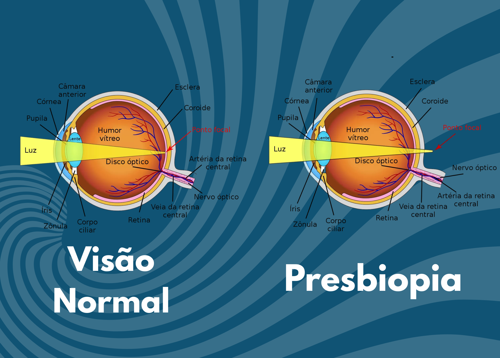

Presbiopia
O que é presbiopia?
A presbiopia, popularmente conhecida como "vista cansada", é uma condição ocular relacionada ao envelhecimento natural dos olhos. Ela ocorre geralmente entre os 35 e 45 anos de idade, quando o músculo ciliar e o cristalino perdem a capacidade de acomodação, dificultando a focalização de objetos próximos.
Sintomas
Os sintomas mais comuns incluem dificuldade para ler letras pequenas, necessidade de afastar objetos para enxergá-los melhor, dores de cabeça e fadiga ocular após atividades visuais prolongadas. Esses sinais indicam a diminuição da capacidade de foco para perto.
Causas
A principal causa da presbiopia é o envelhecimento natural do olho, que afeta a flexibilidade do cristalino e a eficácia do músculo ciliar. Isso impede o ajuste adequado do foco para objetos próximos, tornando a leitura e outras atividades de perto mais difíceis.
Diagnóstico
O diagnóstico da presbiopia é realizado por um oftalmologista através de exames de acuidade visual e testes específicos que avaliam a capacidade de foco em diferentes distâncias. É importante realizar consultas regulares para monitorar a saúde ocular.
Prevenção
Embora a presbiopia seja uma condição inevitável com o envelhecimento, manter hábitos saudáveis, como uma alimentação equilibrada, proteção adequada contra a luz solar e evitar o tabagismo, pode contribuir para a saúde ocular geral e retardar o aparecimento de sintomas.
Tratamentos
O tratamento mais comum para a presbiopia é o uso de óculos de leitura ou lentes multifocais, que corrigem a visão para diferentes distâncias. Em casos específicos, lentes de contato multifocais ou procedimentos cirúrgicos, como a presbiLASIK ou a substituição do cristalino por lentes intraoculares multifocais, podem ser considerados.
É fundamental consultar um oftalmologista para avaliar a melhor opção de tratamento, considerando as necessidades individuais e possíveis condições associadas, como miopia ou hipermetropia.